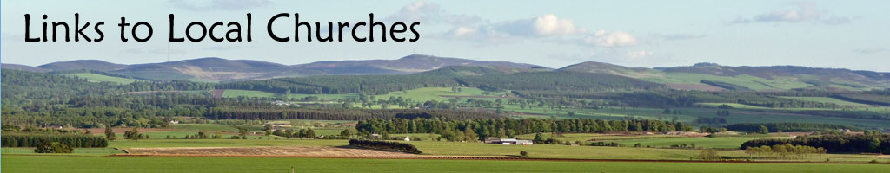

<div class="main-wrapper">
  

  {% include 'nav.html' %}

  <div class="main-content">
    <p>
      There are several churches local to the Westmuir area which offer a variety of denominations
      and worship styles.&nbsp; All of them make visitors very welcome.&nbsp; Please use the links
      to their own websites or telephone numbers where listed below to find out more information
      about locations and service times.
    </p>

    <div class="church-info">
      <a href="http://www.standrews-kirriemuir.org.uk/" target="_blank"
        >St Andrew&rsquo;s Church of Scotland, Kirriemuir</a
      >

      <a
        href="http://www.gkopc.co.uk/"
        title="Click here to go to the GKOPC Website"
        target="_blank"
        >The Glens &amp; Kirriemuir Old Parish Church, Kirriemuir</a
      >

      <a href="https://www.kirriemuir-anglican.org/" target="_blank"
        >St Mary&rsquo;s Episcopal Church, Kirriemuir</a
      >

      <a href="http://www.sacredscotland.org.uk/church/st-anthonys-kirriemuir" target="_blank"
        >St Anthony&rsquo;s Roman Catholic Church, Kirriemuir</a
      >

      <a
        href="http://churches.evangelical-times.org/church/616/free-baptist-church-kirriemuir"
        target="_blank"
        >Free Baptist Church, Kirriemuir</a
      >

      <a href="http://www.strathmorecf.org.uk/" target="_blank"
        >Strathmore Christian Fellowship, Kirriemuir
      </a>

      <div>
        <p>Westmuir Christian House Fellowship, Westmuir :</p>
        <p>Contact: 01575 573221 or 01575 572603</p>
      </div>
    </div>
  </div>
  {% include 'nav.html'%}
</div>
